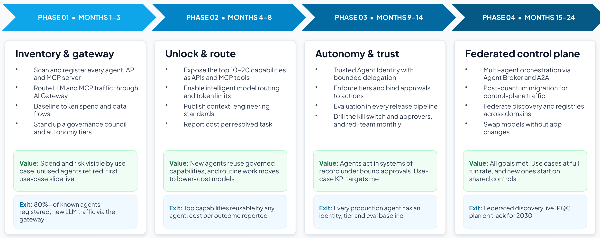

Section 6
Phasing for early value
CIOs and CTOs are right to worry about returns. In a survey of more than 4,400 chief executives published in January 2026, 56% said AI had delivered no significant financial benefit to date.79 In a mid-2026 survey, 37% of respondents attributed any EBIT impact to AI,80 and many agentic AI projects are expected to be canceled over cost, unclear value or weak risk controls.6 The response is to keep the ambition and improve the sequence: adopt the reference architecture in phases, and put a slice of a real use case into production in every phase, so value arrives from the first milestone while the platform matures.

The four platform phases
| Phase | When | Focus | Key actions | Milestone |
|---|---|---|---|---|
| Phase 1 | Months 1–3 | Inventory and gateway |
| Month 3: one front door |
| Phase 2 | Months 4–8 | Unlock and route |
| Month 8: reusable capabilities |
| Phase 3 | Months 9–14 | Autonomy and trust |
| Month 14: trusted autonomy |
| Phase 4 | Months 15–24 | Federated control plane |
| Month 24: north star reached |
Put visibility and one policy point first, then reusable capabilities and routing, then trust, and leave federation for last. Published phasing guidance likewise starts with governance, a single policy point and baseline guardrails, and federates only at scale.20
Phasing the use case
The same pattern works inside each use case, with milestones at months 3, 8, 12 and 24 (template T11):
- Month 3 (phase 1). Start read-only or propose-only, in one scope (a service line, market, region or site), with every model and tool call through the gateway from day one.
- Month 8 (phase 2). Widen the scope and add drafting and proposals. Publish the use case’s capabilities as governed APIs and MCP tools the next use case can reuse.
- Month 12 (phase 3). Let agents act in systems of record, but only under approvals bound to each action, limits that hold across sessions, and a kill switch people have drilled. This is where most of each business case sits.
- Month 24 (phase 4). All goals met: the run rate is sustained, adjacent processes are added on the same controls, and models can be swapped without application changes.
Setting expectations with payback benchmarks
Finance will test the milestone values against published payback data, so show the benchmark first, and how phasing beats it (T2 and T11):
| Benchmark | What the research found |
|---|---|
| Typical AI payback | Two to four years for a typical AI use case, against the seven to 12 months expected of technology investments, with only 6% seeing payback within a year and just 10% realizing significant ROI from agentic AI (Deloitte, 1,854 executives in Europe and the Middle East, 2025).82 |
| What CEOs expect | 67% of 1,350 CEOs expected returns on AI within one to three years, where a year earlier most expected three to five (KPMG 2025 Global CEO Outlook).83 |
| Returns so far | 84% of 2,403 executives saw increasing financial returns from AI, and 26% saw returns accelerate year over year (Google Cloud, 2026).84 |
| Separate horizons | 85% of the ROI leaders in Deloitte’s survey use different frameworks or timeframes for generative and agentic AI.82 |
Phasing is how a program beats the benchmark: read-only and propose-only slices release capacity within months and help fund the controls that the larger gains depend on. Judge the early slices on months, and the agentic ones that act in systems of record on a longer horizon.
Quick wins first
Early quick wins keep sponsorship. A good first slice passes every test below. If it does not, shrink the scope or lower the autonomy until it does.
- Shows measurable value within 90 days in one scope (one service line, market, region or site).
- Runs read-only or propose-only (tiers 1 and 2): no writes to systems of record yet.
- Uses systems and data that are reachable now, or with one connector.
- Saves time or money that the users and the sponsor can see.
- Leaves a reusable foundation behind: a registered agent, a governed MCP tool, a golden record or the gateway itself.
- Has a baseline taken before it starts, so the movement can be proved.
Typical quick wins come from the platform and from the use case. The platform delivers visibility on its own: every agent registered with an owner and a tier, duplicate and unused agents retired, and model spend visible by use case. The use case delivers capacity from assembling, checking and drafting, which agents can do safely in read-only or propose-only modes. The larger gains usually arrive in phase 3, once agents can act in systems of record under the approvals and limits that phase puts in place.
KPIs
Set three kinds of KPI, each with a baseline, a target for every milestone, a data source and an owner (template T6):
- Business outcomes. The measures the sponsor will judge success by: cycle time, effort, error or exception rates, revenue or cost effects.
- Quality and adoption. Evaluation pass rates, first-time-right rates, the share of work flowing through the new process.
- Control plane. The scorecard below, reported monthly to the executive committee and quarterly to the AI governance board.29
| Metric | Definition | Direction | Data source |
|---|---|---|---|
| Agent coverage | Share of known agents registered with an owner and a risk tier | Up | Agent Registry and Scanners |
| Governed traffic | Share of LLM and MCP calls routed through the AI gateway | Up | AI Gateway |
| Cost per outcome | Model spend per resolved task, by use case | Down |
|
| AI cost visibility | Share of model and tool spend attributed to an owner and a use case within a day, and share of agents under a token-based rate limit | Up |
|
| Value realized | Run-rate value of live use-case slices against their business cases, agreed with finance | Up |
|
| Policy enforcement | Violations blocked before impact versus found afterward, including exposure-limit breaches refused by a custom aggregate-risk policy where one is in place | Up |
|
| Time to contain | Minutes from alert to kill switch or credential revocation, and to open work handed to a named person | Down |
|
| Evaluation pass rate | Agents meeting quality thresholds before promotion | Up | Evaluation runs (any evaluation tool) |
| Oversight coverage | Share of tier 3–4 high-risk actions with approval or audit | Up |
|
| Oversight effectiveness | Share of high-risk actions executed exactly as approved and within the approval’s validity window, with drills showing people can stop an agent in time | Up |
|
| Crypto readiness | Share of the asymmetric-crypto inventory with a migration plan | Up | Cryptographic inventory |
Leading indicators
The scorecard’s metrics are outcomes a board can read, and they move slowly. Delivery teams also need early signals that move within weeks, defined so that every team computes them the same way. Evaluate the trajectory as well as the answer: whether the agent chose the right tools, in the right order, at an acceptable cost.60 Measure value instead of adoption. In BCG’s 2026 survey of close to 12,000 employees and leaders, the share whose organizations had put agents into workflows rose from 13% to 30% in a year, yet half said their companies lack clear governance for teams of people and AI.88 Use the library below in T6:
| Scorecard metric | Leading indicator | How to measure it |
|---|---|---|
| Agent coverage | Unregistered agents found | Agents found by scanners but not yet registered, and days from discovery to registration |
| Governed traffic | New agents launched behind the gateway | Share of newly promoted agents whose first production call went through the gateway |
| Cost per outcome | Cost per successful task | Model and tool spend divided by tasks that passed their success check, by use case60 |
| AI cost visibility | Spend attributed within a day | Share of the previous day’s model and tool spend tagged to an owner and a use case |
| Value realized | Acceptance rate | Share of agent outputs accepted without significant edits, with undo and revert counted as rejections60 |
| Policy enforcement | Near misses | Calls blocked per 1,000, by policy, and their trend, with exposure-limit refusals counted separately |
| Time to contain | Drill time | Minutes to stop an agent and hand its open work to a named person in the latest drill |
| Evaluation pass rate | Trajectory quality | Tool-selection accuracy and plan adherence on sampled production traces60 |
| Oversight coverage | Verification latency | Time from an agent completing a task to a person approving it.60 Very short times can mean approval without review |
| Oversight effectiveness | Takeover rate | How often a person has to step in and take over a task the agent started60 |
| Crypto readiness | Algorithm agility | Share of gateways and service meshes that can change algorithms by configuration |
AI cost visibility
Cost is where the control plane pays for itself soonest, and where most clients are blind: in KPMG’s second-quarter 2026 pulse, only 26% of organizations had full, real-time visibility into what their AI systems cost to operate, and in the third quarter 43% had set usage or token budgets.8 Treat cost visibility as an active control: tag every model and tool call to an owner, a use case and a cost center, alert as spend nears its budget,14 and compare the cost of each completed outcome with the cost of the same work done by people, because the economics depend on the whole system of people and agents, not on the model bill alone.22 Ask the client for billing data in the FinOps Foundation’s FOCUS format where its providers support it, and use the FinOps unit measures, such as cost per inference and per token, anomaly detection and time to business value.23
ROI and business value
Build the value side from the business case and the phasing, then add the cost side with the project team:
- Run rate at each milestone. Volume in scope × improvement per item × value per unit, for each lever live at that milestone.
- Cumulative value. Count each run rate only for the months it is in force: for milestones at months 3, 8, 12 and 24, that is five, four and twelve months.
- Costs. Platform subscriptions, implementation services, model usage, infrastructure, and change and training, from the project team’s estimate and the client’s own costs.
- ROI and payback. ROI = (cumulative value − cumulative cost) ÷ cumulative cost. Payback is the month in which cumulative value first exceeds cumulative cost.
- Reporting. Agree the method with finance, report value realized at every steering review, and keep values illustrative until the baseline is measured.
For use case 1, the run rate is about $0.5 million a year at month 3, $8 million at month 8 and $30 million from month 12. Counted from each milestone, cumulative value by month 24 is about $0.2 million + $2.7 million + $30 million, or about $33 million, before platform, model and change costs (illustrative).
Business value beyond the numbers
- Risk avoided. Decisions made by the right person before work starts, with evidence and lineage.
- Compliance evidence. Audit trails that answer regulators and inspectors in hours instead of weeks.
- Experience. Faster answers for clients and fewer chasers for staff.
- Reuse. Every governed API, MCP tool and golden record makes the next use case faster and cheaper to deliver.
The operating model
Technology is the smaller part of the work: BCG estimates that becoming AI-first “involves 30% technology and 70% people and organization.”85 In Microsoft’s 2026 Work Trend Index, only one in four people using AI at work said their leadership is clearly and consistently aligned on AI,86 and in Google Cloud’s 2026 survey, 48% of the organizations whose AI returns are accelerating had “extremely clear” ownership and decision rights for AI and agentic initiatives.84 Agree who owns what before the agents go live (T13):
| Role | Owns | Decides |
|---|---|---|
| Accountable executive | The program, its funding and its business cases | Which phases and use cases proceed |
| AI governance council (architecture, security, risk, data, finance and the business) | Policy, autonomy tiers, standards and no-go zones |
|
| Business owner, per use case | Value, KPIs and the process agents work in |
|
| Agent sponsor, per agent | One agent from registration to retirement |
|
| Platform team (the control plane’s product owner) | Registry, gateway, identity, evaluation and observability services | Platform plan, shared policies and onboarding standards |
| Security and risk | Threat model, red-teaming and incident response |
|
| Finance | Cost attribution and value tracking |
|
Build skills in step with the plan: approvers trained on what they approve, sponsors on the agent lifecycle, and business teams on working alongside agents and taking over when one is stopped. Measure adoption by value and acceptance instead of counting users or prompts.